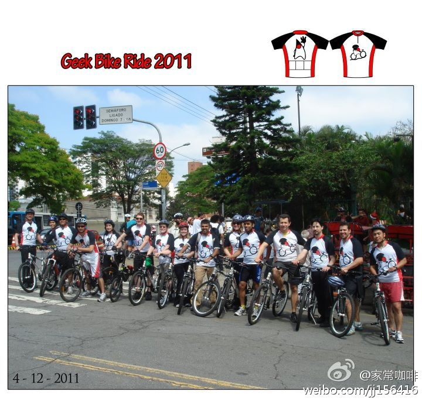

太感谢了，触摸扳和键盘失灵确实是由鼓起的电池引起的。换个电池要千多元，真是贵啊。//@-叶诚- 同样问题遇到过。触控板失灵是电池鼓起压住了。把电池取出看看。@Ada李力:我有个Macbook Pro笔记本, 用了三年, 现在一身毛病, 电池鼓起来不能用了, 触摸板失灵, 电源插头的铁片掉出, 今天发现时不时出些问题的键盘也找不到了. 这笔记本算是报废了, 质量真次! 怀念我曾经用过的Sony笔记本, 真抗造, 有次从讲台上摔下去, 捡起来还能继续用, 用了四年, 依旧是好好的.
@InfoQ 维护着一个“中国技术社区活动日历表“ 网页链接 向非盈利组织和商业团体免费开放。如果有活动信息并想加入这个日历，可以致信chinaitevents[at]gmail.com 请求帮助添加活动。 @霍泰稳
这样的活动有意思，什么时候中国也组织下？之前北美还有Java Bus全国巡游的活动，每到一地，演讲，聚会，烧烤，形式很活泼。@家常咖啡:Geek Bike Ride，Java Leader的的自行车赛，正成为Java User Group（JUG）的一项标准赛事，附图摄于去年在巴西举行的JavaOne 